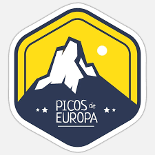
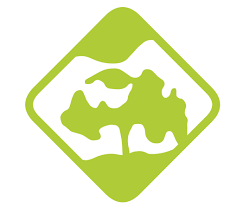
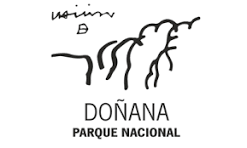
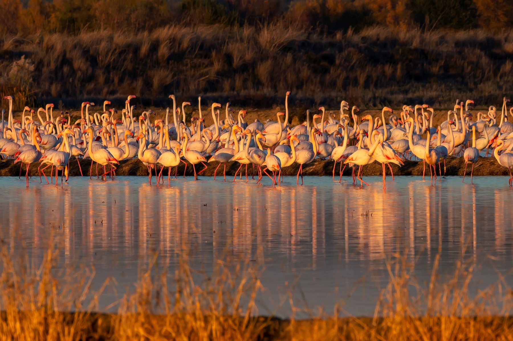
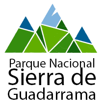

Parque Natural.jpeg)
Picos de Europa
Asturias, León y Cantabria
Representa los ecosistemas ligados al bosque atlántico. Los Picos de Europa presentan la mayor...
VisitarDescubre y explora parques naturales, desde nuestra app y web. Consulta mapas interactivos, rutas, y toda la información de cada lugar. Regístrate para acceder a funciones exclusivas.
¡Únete y transforma tu forma de explorar los espacios protegidos!
Regístrate o inicia sesión para disfrutar de todo lo que Bosquea tiene para ti

Parque Natural
Asturias, León y Cantabria
Representa los ecosistemas ligados al bosque atlántico. Los Picos de Europa presentan la mayor...
Visitar
Parque Natural
Ciudad Real
Las Tablas de Daimiel son un humedal prácticamente único en Europa y último representante del...
Visitar
Parque Natural
Huelva y Sevilla
Destaca sobre todo la marisma, de extraordinaria importancia como lugar de paso, cría e invernada...
Visitar
Parque Natural
Madrid y Segovia
Las condiciones de la Sierra, más fresca y húmeda que las mesetas, y su menor transformación por la...
Visitar